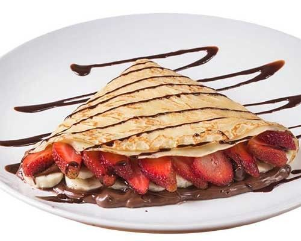
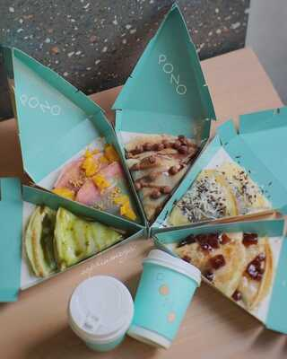

En Crepura ofrecemos productos de la más alta calidad en ingredientes y sabor, buscando generar momentos únicos acompañados de un grandioso sabor, marcando la diferencia mientras conectamos con nuestros consumidores.
Anhelamos ser la empresa líder en innovación y conexión hacia el cliente. Buscamos conectar con el consumidor en cada producto o servicio, queremos involucrarnos en esos momentos únicos que el cliente vive con nosotros.
Ofrecer productos de alta calidad, innovadores y deliciosas crepas que satisfagan las necesidades o deseos de nuestros clientes. Crear un ambiente acogedor y agradable para que nuestros clientes puedan disfrutar las crepas. Buscamos destacar en el mercado como una empresa amigable y alegre, que tiene variedades de sabores, además de crear sitios web para ofrecer servicio a domicilio para las personas que quieran disfrutar en sus hogares.
1. Pasión: Cada acción se hace con cariño y atención al producto.
2. Compromiso: Cumplir con lo prometido al cliente.
3. Honestidad: Ser sinceros y satisfacer lo prometido.
4. Responsabilidad: Ser responsables con las buenas prácticas como la higiene.
5. Calidad: Ofrecer productos de buena calidad en preparación y sabor.